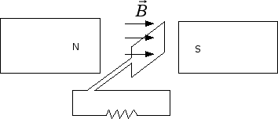
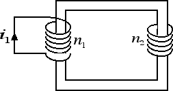

Correnti indotte
Corrente alternata
Il fenomeno delle correnti indotte è utilizzato dall'alternatore (ad esempio la dinamo della bici) per convertire energia cinetica in energia elettrica.

Una spira viene messa in rotazione all'interno di un campo magnetico uniforme. Nella rotazione varia l'angolo α tra la normale alla spira e il campo magnetico e, di conseguenza, varia il flusso del campo magnetico che produce una tensione indotta la quale fa circolare corrente nella spira e nel circuito elettrico. In base alla legge di Faraday-Neumann-Lenz la d.d.p. indotta e la corrente saranno tanto maggiori quanto più rapido è il movimento della spira.
La corrente elettrica e la tensione che si generano in questo modo sono correnti e tensioni alternate che variano man mano che il tempo passa in base alle relazioni: i(t) = i0 sen (ωt) e V(t) = V0 sen (ωt), dove V0 e i0 sono i valori massimi della tensione e della corrente e rappresentano l'ampiezza dell'onda sinusoidale. ω prende invece il nome di pulsazione ed è data da: ω = 2 π f = 2 π / T, dove f è la frequenza e T il periodo (ossia l'intervallo di tempo tra due massimi o due minimi consecutivi).
La corrente elettrica di casa è una corrente alternata con tensione massima V0 = 311 V. La tensione efficace è invece una sorta di valor medio della tensione e Veff = V0 / 1.41 = 220 V. La frequenza della corrente varia da paese a paese: tipicamente f = 50 Hz nei paesi europei, f = 60 Hz negli USA.
Se è presente solo una resistenza R la tensione è massima quando è massima anche l'intensità di corrente e viceversa, pertanto la relazione R = V / i continua a valere. Se invece cominciamo a introdurre nel circuito anche condensatori (o induttanze) la situazione cambia. Infatti, in un circuito a corrente continua sappiamo che un condensatore, una volta completato il processo di carica, si comporta come un interruttore aperto e non consente il passaggio di ulteriori cariche elettriche.
In un circuito a corrente alternata la corrente i cambia il suo verso con frequenza f = 50 Hz e quindi un'armatura del condensatore si ritroverà ad avere periodicamente cariche positive e cariche negative. L'inserimento del condensatore nel circuito crea uno sfasamento tra i valori massimi della corrente i0 e della tensione V0. Infatti la corrente è massima quando la tensione V è nulla e viceversa. In tali casi si preferisce sostituire il concetto di resistenza con l'impedenza Z definita come rapporto tra i valori massimi della tensione e della corrente, ossia: Z = V0 / i0. Se nel circuito elettrico c'è solo un condensatore di capacità C vale la seguente formula: 1 / Z = 2 π C f. La relazione che intercorre tra corrente e tensione efficace diventa ieff = 2 π C f Veff.
Le correnti indotte sono utilizzate anche nel trasformatore illustrato in figura:

Se la corrente i1 nel circuito primario è una corrente variabile, allora il campo magnetico varia nel tempo e, di conseguenza, cambia il flusso concatenato con il secondo circuito. Se il solenoide del circuito primario contiene n1 spire e quello del secondario n2 spire allora il rapporto tra le tensioni efficaci nei due circuiti viene ad essere uguale al rapporto tra il numero delle spire: V2 / V1 = n2 / n1. Un trasformatore che aumenta il valore della tensione è detto elevatore, un trasformatore che abbassa il valore della tensione è detto invece riduttore.
I trasformatori sono utilizzati per innalzare la tensione dai 10-25 kV di una centrale elettrica ai 380 kV delle linee ad alta tensione e poi per riabbassare la tensione ai 220 V della rete domestica. Le linee ad alta tensione vengono usate per ridurre le perdite di energia elettrica per effetto Joule durante il trasporto della corrente. Infatti la perdita di potenza per effetto Joule è P = R i2 e dunque è tanto minore quanto minore è la corrente i. A parità di potenza trasportata P, la corrente i = P / ΔV è tanto minore quanto maggiore è la tensione della linea. Questo è il motivo per cui si eleva la tensione della corrente fino a 380 kV per il suo trasporto.